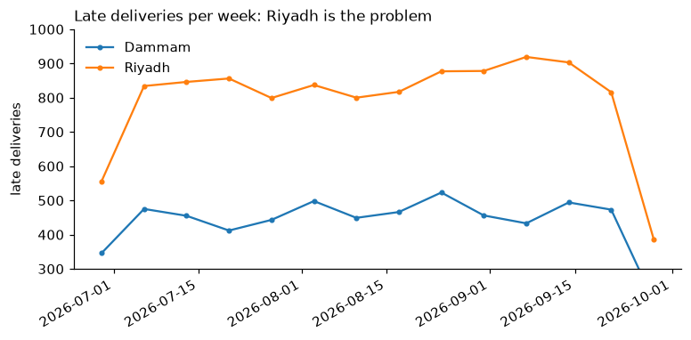
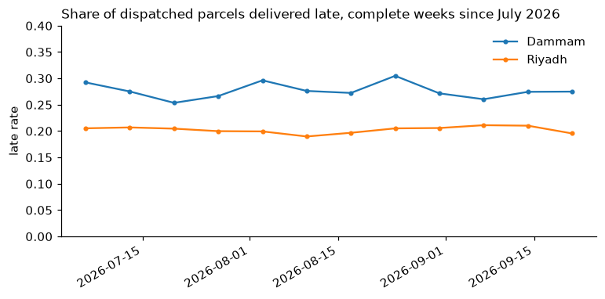

SDAIA Academy · Analysis with AI Assistants: Delegate, Verify, Reproduce
Verify
Day 2: Recompute the headline another way, count rows around every join, read charts and summaries against the data, and ask twice
Data Science Track3 teaching days + capstone day4 sessions · 4 labsDS-206
Today
Verify
Session 1 · Recompute it another wayA number is verified when a second, independent path reaches it, and every point of the gap has a named cause
Session 2 · Joins, filters and denominatorsMost wrong numbers in assisted SQL come from rows that were multiplied, rows that were dropped, and a denominator nobody stated
Session 3 · Charts and wordsA chart is a set of encodings and a summary is a list of claims: each one is checked against a query
Session 4 · Ask it twiceThe same request gives different code and different numbers on different runs: only conclusions that hold in every run are reported as found
Review · Day 1
What was missing from the one-line request?
"What is our on-time delivery rate?" returned 85.3%; the written definition gives 79.4%. Which part of a brief would have prevented most of the gap?
A longer statement of the question
Constraints on the engine and the number of queries
A more capable model
The definitions: which on-time rule, and out of which parcels
Why. The definition and the denominator moved the number by up to ten points in Lab 1.1; everything else moved it by less than two.
Session 1
Recompute it another way
Choose a recomputation path that shares as little as possible with the first
Recompute a headline rate in SQL without an assistant
Reconcile two numbers by applying one difference at a time
01
Dammam, by quarter
Two analyses of one city tell two stories
On-time rate, Dammam
2025 Q4
2026 Q1
2026 Q2
2026 Q3
The story
Rafiq, in pandas
86.9%
87.1%
87.1%
84.3%
"Steady, a dip of under three points"
You, in SQL from the definitions
79.6%
80.0%
79.7%
72.3%
A fall of 7.4 points
Two numbers that differ are not yet a finding. One of them is wrong, or both are. Until the gap is explained you do not know which.
Recompute another way
A second path verifies only what it does not share with the first
Independent
Starts from the written definitions
Starts from the base table, one row per parcel
Written by you, before reading the first path's code closely
Not independent
The same query, translated to another engine
The same joined table, aggregated differently
The assistant asked to "double-check" its own answer
Share the question and the data. Share nothing else.
Choosing the second path
Five ways to reach the same number differently
Another…
How
Catches
Starting table
From deliveries only, no scans
Fan-outs, dropped rows
Grain
Daily counts first, then sum to the quarter
Period boundaries, averaging of averages
Engine
SQL if the first was pandas, or the reverse
Type and time handling, silent NULL rules
Source
A total from finance or the operations system
Missing or duplicated data upstream
Sample by hand
Twenty parcels, judged against the definition by eye
A definition coded wrongly in both paths
Lab 2.1, measured
Reconcile the gap one cause per row, until nothing is left
Dammam, third quarter of 2026
On-time rate
Change
Rafiq's method
84.28%
+ compare in local time, not UTC
74.73%
−9.54
+ quarter of created_at, not of the scan
74.78%
+0.04
+ every dispatched parcel, undelivered ones late
72.46%
−2.31
+ no test shipments
72.26%
−0.21
Your SQL
72.26%
0 left
Change one choice per row.
The first row reproduces their number; the last equals yours.
The changes add up to the whole gap: 12.0 points.
A remainder means an error nobody has found yet, possibly yours.
Why it mattered here
One time-zone error hid the one thing the director needed
−7.4 points
Dammam's on-time rate from the second to the third quarter of 2026, under D-2
−2.8 points
the same change in the assisted analysis
The mechanism
A UTC scan time compared with a local promise makes every parcel delivered up to three hours after the cut-off look on time.
The coincidence
Dammam's new problem is evening deliveries, just after the cut-off: exactly the parcels the error hides.
The course's AI policy
The first recomputation is done without the assistant
Independence
A second query from the same assistant shares its reading of the columns and its habits.
Skill
Reading code and finding what is wrong with it is the skill that erodes when it is never exercised.
Accountability
In the defence you recompute one headline number live, with no assistant. Practise here.
After the first recomputation the assistant is welcome: to explain a gap you have measured, or to write the tedious rows of a bridge you designed.
Checkpoint
Which recomputation is independent?
An assistant reports 3.1 failed parcels per 100 dispatched in Jeddah, from a query that joins deliveries to scans. Which second path tells you most?
Rewriting the same query in pandas and comparing
Asking the assistant to review its query for mistakes
Counting failed and dispatched parcels from deliveries alone, by status
Running the same query for Riyadh and checking it is similar
Why. It starts from the base table and the definition and shares neither the join nor the filters of the first path.
Lab 2.1 · 25 min
Recompute and reconcile
Recompute an assistant's on-time rate in SQL and reconcile the gap, one cause per row.
Run the assisted analysis and read its number 4 min
Recompute the rate yourself in SQL, without an assistant 8 min
Reconcile the gap, one cause per row 9 min
Write the verification note 4 min
✱ Stretch: Recompute a third time in pandas from the parquet file
Session 2
Joins, filters and denominators
Count rows before and after each join to find a fan-out
Find the rows a filter dropped with an anti-join
State the denominator of a rate in one sentence and test the code against it
02
What you already know
You can write a safe join. Today you audit one you did not write
From SQL and Data Wrangling (FN-104)
Grain, keys and cardinality
Filters and NULL
Joins that do not double count
Testing queries
What changes with an assistant
The query arrives complete and fluent
You did not make its choices, so you do not remember them
It joins tables you would have left out
Its sentence describes the intent, not the code
Check 1 · Lab 2.2, measured
Count rows and distinct keys after every join
Stage of the assisted query
Rows
Distinct parcels
Reading
deliveries, with its filters
21,158
21,158
One row is one parcel
+ join route_plans
22,699
21,158
1,541 extra rows: plan versions
+ left join driver_shifts
23,778
21,158
More rows: split shifts
+ AND s.hours >= 8
21,620
20,164
994 parcels gone
The fastest check in analysis. If rows and distinct keys differ, one parcel has become several rows, and every average after it is weighted wrongly.
Two fan-outs, one cause
Several rows per key, and the join took them all
WITH plan AS (
SELECT*FROM route_plans
QUALIFY version =MAX(version) OVER (
PARTITIONBY hub_id, plan_date, route_id)
)
FROMscope s
JOIN plan p
ON p.hub_id = s.hub_id
AND p.plan_date = s.route_date
AND p.route_id = s.route_id
route_plans
One row per version. A route replanned at midday has two or three.
driver_shifts
One row per shift. A driver on a split shift has two that day.
The question to ask of every join
What is one row of the table on the right, and is the join key unique in it?
A filter in the wrong place
A condition on the right table turns a left join into an inner join
LEFT JOIN driver_shifts s
ON s.driver_id = d.driver_id
AND s.shift_date = d.route_date
WHERE d.city = 'Dammam'
AND d.status = 'delivered'
AND s.hours >= 8
What it did
Removed every parcel whose driver had no single shift of eight hours: 994 parcels on split-shift days.
What nobody asked
The reply said "kept full shifts". The request never mentioned shifts.
Check 2 · Lab 2.2, measured
An anti-join against the scope names every missing row
WITHscopeAS (...), -- from the sentence
j AS (SELECTDISTINCT delivery_id
FROM (...)) -- their joined rowsSELECT reason, COUNT(*) AS parcels
FROMscopeLEFTJOIN j
ON j.delivery_id = scope.delivery_id
WHERE j.delivery_id ISNULLGROUPBY reason
Missing from the assisted result
Parcels
Driver on a split shift
994
Never delivered: failed or returned
688
Created on the last day
236
Of 22,082 in scope
1,918
Check 3
Say the denominator as a sentence, then test the code against it
The sentence
Dispatched Dammam parcels created in the three months, each counted once, classified by the plan in force on its route and day.
Words of the sentence
What the code must show
dispatched
delivered, failed and returned; not cancelled
created in the three months
from 1 July up to, not including, 1 October
each counted once
rows equal distinct parcels
the plan in force
the highest version only
If you cannot say it in one sentence, the rate has no meaning yet. The sentence also goes into the report, under the number.
After the repair
The conclusion survived. The numbers did not
Dammam, July to September 2026
Short routes
Long routes
Gap
Counted
Assisted query, four errors
81.4%
70.3%
11.1 points
21,620 rows
Corrected
79.0%
68.1%
11.0 points
22,082 parcels
What to say
Parcels on routes above 60 planned stops are on time 11 points less often: 68.1% against 79.0%.
What not to say
"The direction was right." A report quotes rates, and both were over two points too high.
Checkpoint
Which check finds it first?
An assisted query joins complaints to deliveries to scans and reports "complaints per late parcel". You suspect a fan-out. What do you run first?
Rows against distinct complaint ids after each join
The final total, compared with last month's report
An anti-join of complaints against the result
A careful read of the join conditions
Why. A fan-out shows as more rows than distinct keys, at the join that causes it.
Lab 2.2 · 25 min
Four seeded errors
Find the seeded join and filter errors in an assisted analysis, and name the check that found each.
Run the assisted analysis and read its claim 4 min
Count rows before and after each join 7 min
Find the rows each filter dropped 6 min
State the denominator and recompute 4 min
Write the verification note 4 min
✱ Stretch: Repair the query and confirm the corrected comparison
Session 3
Charts and words
Read a chart's axis, measure and time window against the table behind it
Split a written summary into claims and test each with a query
Check that a summary does not misstate one city or language group
03
Reading a chart you did not draw
Three encodings decide what a chart says
The measure
What is on the y axis: a count or a rate? Of what, out of what?
The axis
Where does it start? Is the scale the same for every series?
The window
Which periods are shown, and is each one complete?
Read the code, not the picture. An assistant's chart comes with the table and the plot call that made it: the encodings are written there.
Lab 2.3, drawn from the lab's run
Same parcels, same weeks, opposite message

The assistant's chart: counts, an axis from 300, two partial weeks.

Redrawn: rates, an axis from 0, complete weeks.
The measure
By count Riyadh is the problem. By rate it is Dammam
Complete weeks since July
Riyadh
Dammam
Late parcels per week
847
464
Share of dispatched parcels late
20.3%
27.7%
Tahani asked which city to fix first.
A count answers "where are most of the late parcels?"
A rate answers "where is the service worst?"
Both are legitimate. The chart must say which it shows, and the title must not claim the other.
Words · Lab 2.3, measured
A summary is a list of claims, and each claim has a query
The assistant's sentence
Verdict
All 20,000 complaints say
Damaged parcels are the most common complaint, about half
fails
Late is first at 36%; damaged is 23%
Most complaints are written in English
fails
56% are in Arabic
Madinah has the fewest complaints, so it needs the least attention
fails
Fewest by count, most per 1,000 parcels: 60.3
Late-delivery complaints from Dammam rose after June
holds
From 94 to 144 a month
Arabic and English complaints raise the same issues
fails
Late is 40% of Arabic complaints, 32% of English
Read the code before the words
The summary was written from the first 500 rows
sample = con.sql("""
SELECT city, language, category, text
FROM complaints LIMIT 500
""").df()
The export is sorted by channel, email first.
English, first 50092%
English, all complaints44%
Damaged, first 50051%
Damaged, all complaints23%
A model cannot read 20,000 texts in one request, so something chose which ones it read. Find out what.
Responsible use
The sample left out a city and a language
Madinah
Fewest complaints by count: 3,239. Most per 1,000 parcels: 60.3, against 38 to 40 in the other three cities.
The summary: "needs the least attention".
Customers who write in Arabic
56% of all complaints. Late delivery is 40% of what they raise, against 32% for English.
The summary: "the same issues in the same proportions".
A check for every summary. Break the claim down by city and by language before it leaves your notebook. A group missing from the sample is a group the summary speaks for without having heard.
Checkpoint
Which sentence needs a different query?
An assistant writes: "Refund complaints are rare in Jeddah (742 of 5,573), so cash on delivery works well there." What do you check?
That 742 of 5,573 is the right count for Jeddah
The count, and refund complaints per 1,000 cash-on-delivery parcels by city
A further 500 complaint texts from Jeddah, read by the assistant
The share of refunds among Jeddah's complaints against other cities
Why. The sentence makes two claims. The second, that the service works well, needs a rate out of the parcels that could have produced a refund complaint.
Lab 2.3 · 25 min
A chart and a summary against the data
Check an assistant's chart and complaint summary against the data, claim by claim.
Recompute the charted series and read its encodings 8 min
Redraw the chart from the checked table 4 min
Test each sentence of the complaint summary 9 min
Write the verification note 4 min
✱ Stretch: Compute complaints per 1,000 parcels by city and language
Session 4
Ask it twice
Explain why one request yields different analyses between runs
Tabulate the analytic choices, numbers and conclusions of repeated runs
Separate the conclusions that held in every run from those that did not
04
Lab 2.4, measured
One request, one context file, the same settings, five answers
Run
What it measured
Worst city
Dammam since July
Cities "worse"
Code like run 1
1
D-2, dispatched parcels
Dammam
72.3%
1
1.00
2
D-2, delivered parcels
Dammam
74.6%
1
0.82
3
Late parcels per month
Riyadh
2,042 a month
4
0.37
4
The system flag
Dammam
72.3%
4
0.73
5
D-2, against April to June only
Dammam
72.3%
1
0.73
If you had asked once, you would hold one of these five and would not know which.
Sources of variation
Runs differ because the model samples and the request leaves room
Sampling
Each word is drawn from a distribution. Temperature widens or narrows it; few hosted models promise identical output even at zero.
Room in the request
"Worst" and "got worse" each allow several measures and baselines. The model picks one per run.
A moving service
A hosted model can be updated behind the same name. Next month's run is another run.
You control the middle one. A brief that fixes the measure and the baseline removes most of the spread in the table.
Not only models
Twenty-nine teams, one data set, one question
0.89 to 2.93
range of the estimated effect, as odds ratios, across the teams
20 and 9
teams that found a significant effect, and teams that did not
21
different combinations of covariates among 29 analyses
The difference with an assistant. A human analyst makes one set of choices and can be asked why. The assistant makes a new set on every run, silently.
The variability table
Report as found only what held in every run
Dammam got worse5 of 5
Dammam is the worst city since July4 of 5
No other city got worse3 of 5
Held in every run
Robust to the choices the assistant varies. Still to be verified once.
Held in some
Depends on a choice. Find the choice before the conclusion goes anywhere.
Reading the disagreement
Three of five is not "60% true"
Run
Why it departed
Under the definitions
3
Counted late parcels per month
A growing company has more of everything
4
Averaged the system flag
Two definitions before and after April
A choice is right or wrong under the definitions. It is not outvoted.
Both departing runs broke a rule the context file states.
Variability told you where to look. The definitions told you who was right.
Then verify the run you keep, as in Lab 2.1.
The limit
Five identical answers can be identically wrong
What repetition shows
How much the answer depends on the model's own variation.
What it cannot show
An error every run shares: a column all five misread, a rule none was told.
Record what was repeated
The request and the context file, word for word
The model's name and version
Temperature, and a seed where the service supports one
The number of runs, and all of them, not the best one
Checkpoint
Five runs agree. What do you know?
You send one request five times with the same settings. All five replies report 31.2% of Madinah's complaints about late delivery. What has been established?
That 31.2% is correct, since five independent runs agree
That any later run of the request will also give 31.2%
That the number does not depend on this model's run-to-run variation
That the five replies used the same code
Why. Repetition measures variation. Whether the number is right is settled by recomputing it another way.
Lab 2.4 · 25 min
Five runs of one request
Repeat one request five times; tabulate differences in code, numbers and conclusions.
✱ Stretch: Run the request five times live at temperature 0 and compare
Day 2 recap
A number is yours when a second path reaches it and the gap is explained
Recompute from the definitions and the base table, without the assistant, then reconcile one cause per row.
Count rows and distinct keys after each join; anti-join the scope; say the denominator.
Charts: the measure, the axis, the window. Summaries: one query per claim, by city and by language.
Ask five times: report what held in every run, and trace what did not to a choice.
What Tahani can now be told. The April jump was the definition. Dammam fell 7.4 points from July, on long routes. Whether the optimiser caused it is yours to judge.
Tomorrow · Day 3
Reproduce and disclose
Decide which tables may reach a hosted assistant, a local one or neither; log one assisted analysis so that it can be rerun; rerun a colleague's package from its log; write the method and disclosure paragraph; and choose your capstone question.